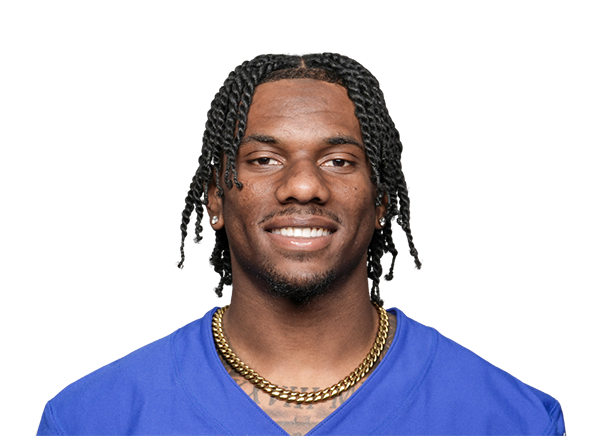
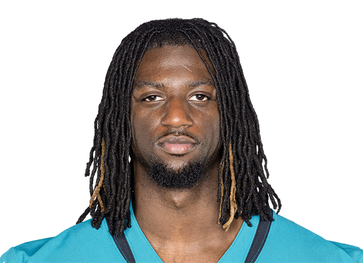
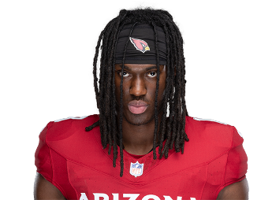

Ser un "rookie" en la NFL se refiere a un jugador que está en su primera temporada en la liga. Es un novato que acaba de ser seleccionado en el draft o fichado por un equipo y, por lo general, está adaptándose al nivel de competencia profesional. Los rookies deben demostrar su habilidad y potencial para ganarse un puesto en el equipo, y enfrentan un reto significativo en cuanto a la velocidad, intensidad y exigencia del juego en la NFL. Además, tienen la oportunidad de aprender de jugadores más experimentados y adquirir experiencia valiosa en su desarrollo profesional.